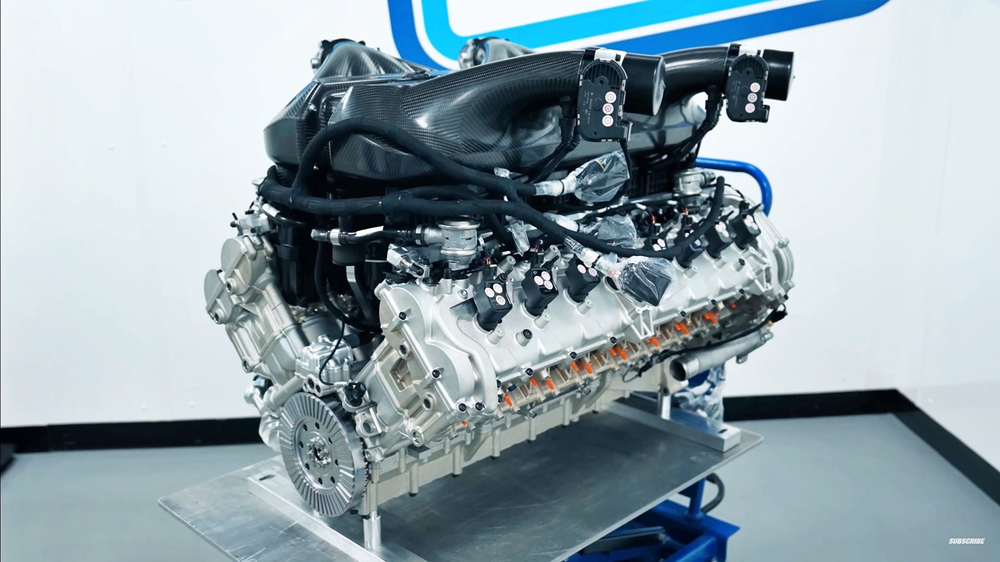

Review Bugatti Tourbillon

Quan Bugatti s’associa amb Jacob & Co., el resultat és molt més que un simple rellotge: és una obra d’art mecànica que eleva el luxe i la innovació a un nou nivell. El Bugatti Tourbillon no només ret homenatge al llegat automobilístic de la marca francesa, sinó que també és un testimoni de l’art i la complexitat de l’alta rellotgeria.
Un Motor en Miniatura
L’element central del Bugatti Tourbillon és el seu mecanisme que emula un motor W16 en miniatura, el mateix que impulsa el llegendari Bugatti Chiron. En prémer un botó, el motor cobra vida: els pistons pugen i baixen de manera sincronitzada mentre el cigonyal —fabricat a partir d’una sola peça d’acer— gira amb precisió. Aquest espectacle mecànic no té rival en el món dels rellotges i converteix el Bugatti Tourbillonen un espectacle visual únic.
Disseny que Respira Automoció
El disseny del rellotge s’inspira en els superesportius de Bugatti. La caixa està construïda amb materials d’alta gamma com el titani o el safir, depenent de l’edició, i la seva forma aerodinàmica recorda els contorns d’un cotxe esportiu. Fins i tot els detalls més petits, com els amortidors que subjecten el mecanisme dins de la caixa, simulen el sistema de suspensió d’un vehicle real.
Exclusivitat i Preu
Com era d’esperar, aquesta peça no és per a totes les butxaques. Amb preus que oscil·len entre els 280.000 $ i més d’1 milió de dòlars, depenent de l’edició i els materials, el Bugatti Tourbillon és una declaració d’estatus i bon gust. La seva producció limitada assegura que només uns quants afortunats puguin lluir aquesta joia al canell.
Conclusió
El Bugatti Tourbillon és molt més que un rellotge: és una experiència, una celebració de la mecànica i un tribut al llegat automobilístic de Bugatti. Tot i que el seu preu el situa fora de l’abast de la majoria, per aquells que busquen l’extraordinari, aquest rellotge és l’epítom del luxe i la innovació.